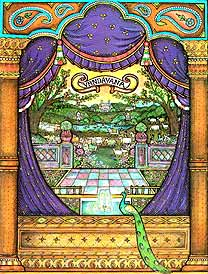

In Vrindavan war alles sehr lieblich. Die Wälder waren voller Pfauen und anderer Vögel.
Das Wasser der Flüsse war sehr klar und rein. Auf den Weiden grasten zufriedene Kühe. Alle Menschen und Tiere waren sehr glücklich in Vrindavan.